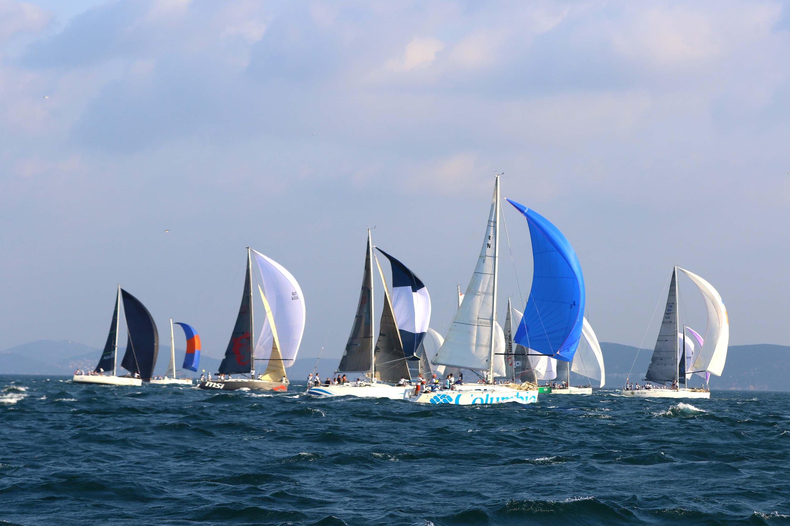
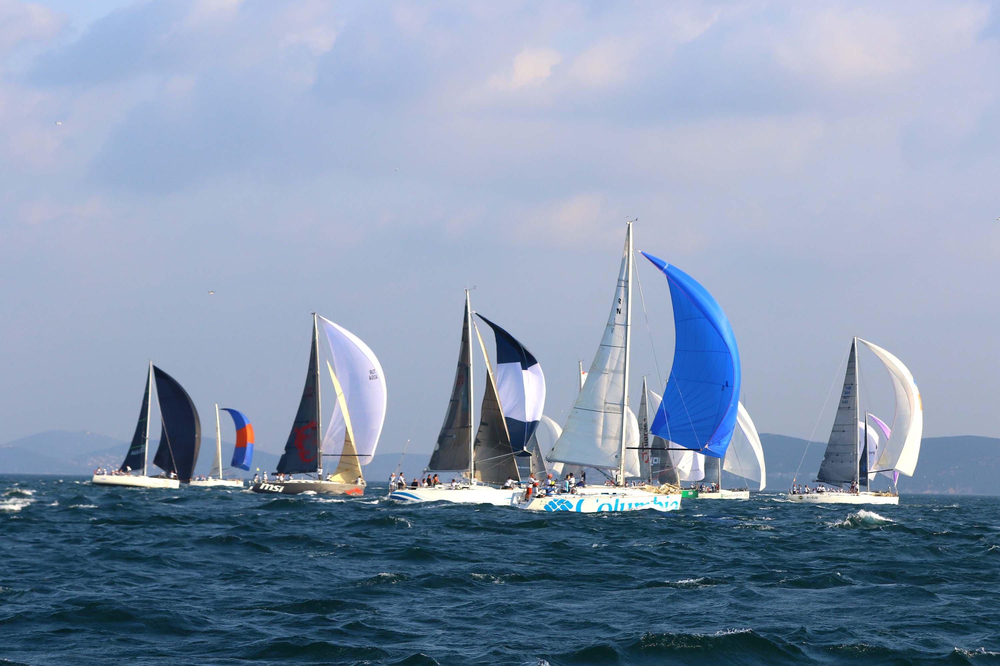

Yelken sporu küçüklü büyüklü çeşitli teknelerle yapılır.
Milletlerarası Olimpiyat Komitesinin belirlediği ve günümüzde kullanılan tekneler şunlardır:
1) Finn; 4,5 m boyunda, tek kişilik olup, yelken alanı 10 m2dir.
2) 470; ikili bir dingi olup, 4,7 m boyundadır. 13 metrekarelik ana yelkene ek olarak 13 metrekarelik yardımcı balon yelken ve yelkeninin dışa sarkarak denge sağlamasına yarayan bir tropez vardır.
3) Flying Dutchman; 6.05 m boyunda olup, ana yelkeni 18.58 m2, balon yelkeni 17.5 metrekaredir.
4) Tornado; 6.1 m boyunda olup, iki kişiliktir. Yelken alanı 21.83 metrekaredir.
5) Star; 6.92 m boyunda, iki kişilik olup, yelken alanı 26.13 metrekaredir.
6) Soling; 8.15 m boyunda, üç kişiliktir. Yelken alanı 21.7 metrekaredir. Olimpiyat sınıfı teknelerin en büyüğüdür.
7) Winglider: 3.6 m boyunda olup, 6.5 metrekarelik yelken alanı vardır. Sörf tahtası ve üzerine dikilmiş 4.5 metrelik bir direkten meydana gelmiştir.
Bu sporu yapanların tekneyle ilgili teknik bilgilere sâhip olmaları gereklidir.
Yelken sporu 19. yüzyılın ikinci yarısında yat sporunun gelişmesiyle başladı. Bu yatlarla denizlerde, göllerde ve akarsularda yelken yarışları düzenleniyordu. Bu spor daha sonraları gelişerek Olimpiyat Oyunlarında da yapılmaya başlandı. Her ülkede bu sporla ilgili bir federasyon bulunmaktadır. Yurdumuzda Cumhûriyet sonrası gelişen yelken sporu Yelken Federasyonu kontrolünde faaliyetlerini sürdürmektedir.
1957 senesinden sonra bununla ilgili çeşitli klüpler kurulmuştur. Bugün yelken sporuyla uğraşan birçok spor kulübü vardır. Yelken yarışları, yarışmacıların belirli bir yönde, çevresinden dolaşmaları gereken şamandıralarla tespit edilmiş bir güzergah üzerinde yapılır. Bu güzergâhın toplam uzunluğu 10 ile 20 mil arasında değişir. Yarışma yelken açmış olarak başlama usulüne göre, karadan veya bir gemiden top atışı veya bayrakla hareket işâreti verilir.
Yarışmacıların uymak zorunda olduğu kurallar Milletlerarası Yat Federasyonu tarafından tespit edilmiştir. Yelken yarışlarının puanlaması ise şöyledir: Birinci gelen “O”, ikinci 3, üçüncü 5, dördüncü 8, beşinci 10, altıncı 11, yedinci 13, sekizinci 14 gibi puan alır. Yarışı terk eden tekneler ise en son bitiren tekneden % 10 fazla puan alır.
Türk yelken sınıfları:
Yurdumuzda genelde optimist, cadet, 380, 470, Finn, Laser ve Dragon sınıflarında yarışmalar düzenlenir. Bu sınıflarda Cumhurbaşkanlığı, Başbakanlık, Federasyon Kupaları ile Türkiye Birinciliği yarışmaları yapılır.
 
